Установка и настройка клиентского ПО ГИС «Смета ЯНАО»¶
В данном разделе описан порядок установки и настройки автоматизированного рабочего места (АРМ) для работы с ГИС «Смета ЯНАО». Существует два способа подключения: через VipNet Client (основной) и через TLS (альтернативный).
Способ 1: Подключение через VipNet Client¶
1. Предварительная подготовка¶
Проверьте перед началом
- КриптоПро CSP. При отсутствии загрузите и установите: cryptopro.ru
- VipNet Client. Убедитесь, что клиент установлен и запущен.
- Сетевой узел. Проверьте доступность узла
LARM-Sal-CB-ServSmetaSP.
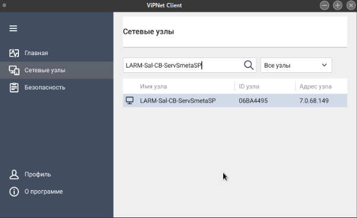
2. Загрузка программного обеспечения¶
Выберите версию для вашей ОС и загрузите ПО ГИС «Смета ЯНАО»
Скачать для РЕД ОС Скачать для Windows
3. Настройка и запуск¶
- Права доступа: Добавьте права на выполнение исполняемого файла
stimrun.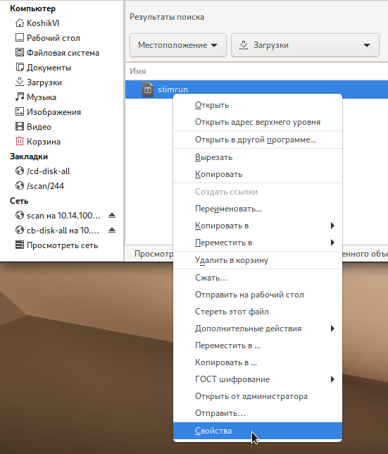
- Каталог: Убедитесь, что у текущего пользователя есть права на запись в текущий каталог (при первом запуске создается файл инициализации).
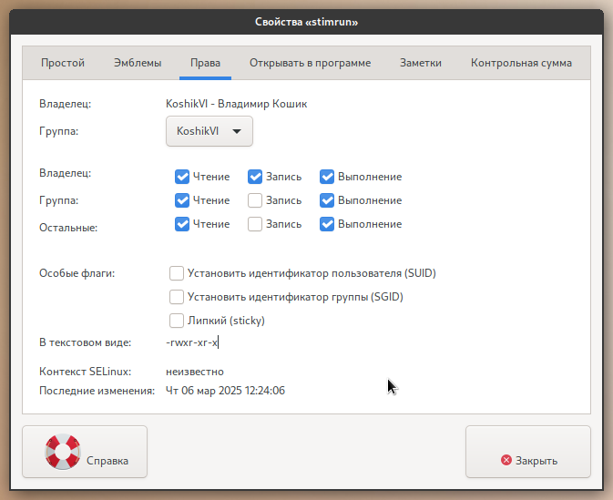
- Запуск: Запустите
stimrun. В модальном окне нажмите на гиперссылку «адрес сервера».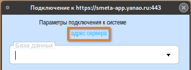
- Настройка адреса:
- Запустите ViPNet Client.
- Перейдите в раздел «Сетевые узлы».
- В поиске введите:
LARM-Sal-CB-ServSmetaSP. - Узнайте IP-адрес узла (например,
7.0.68.149) и используйте порт8080. - Итоговый адрес:
7.0.68.149:8080.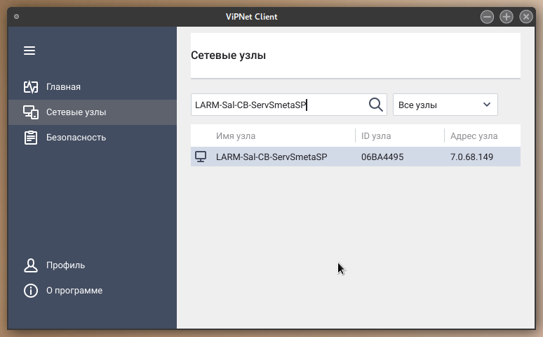
Важно
Запуск приложения ViPNet Client необходимо осуществлять от имени пользователя, под которым была произведена установка лицензии (dst).
- Поиск узла:
- Запустите ViPNet Client.
- Выберите «Защищённая сеть».
- Найдите узел
LARM-Sal-CB-ServSmetaSP, откройте свойства и посмотрите реальный IP-адрес. - Используйте порт
8080. Итоговый адрес:7.0.68.149:8080.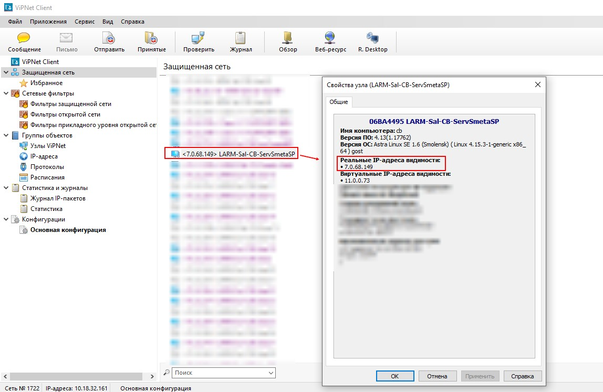
- Настройка подключения: Установите адрес сервера подключения в клиенте ГИС.
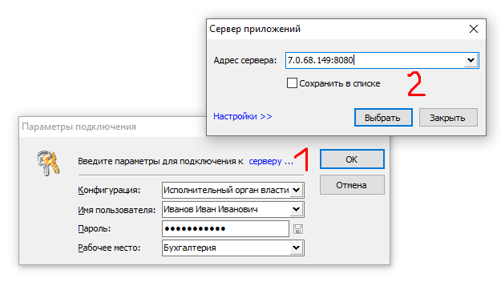
- Обновления: Установите сервер обновлений из стабильной ветки дистрибутива.
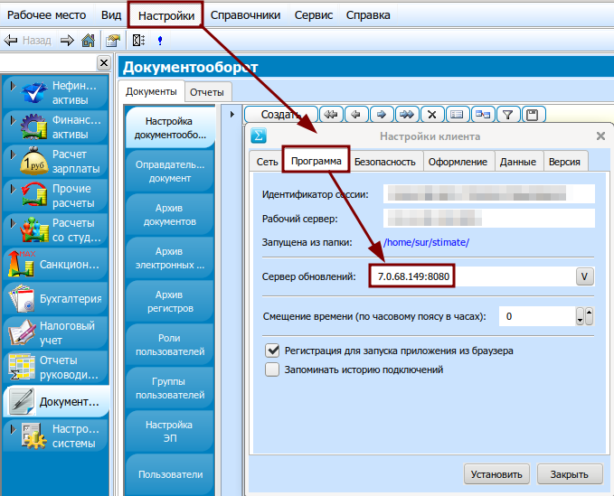
Настройка прокси¶
Если используется прокси-сервер
В случае использования прокси-сервера в локальной сети необходимо указать его параметры. Перейдите по гиперссылке «Настройки» в клиенте.
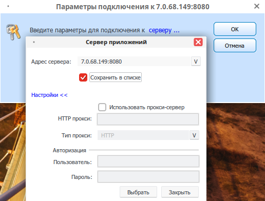
4. Проверка подключения¶
Если всё сделано правильно, в выпадающем списке появится перечень баз данных учреждений. Выберите нужное учреждение.
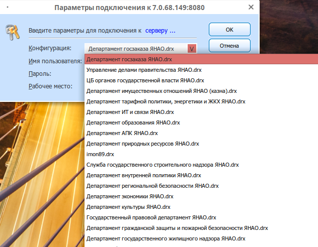
Если список пуст
Если список баз данных отсутствует, доступ к серверу ограничен. Возможные причины:
* Отсутствие доступа к узлу VipNet LARM-Sal-CB-ServSmetaSP.
* Проблемы сетевых технологий ЛВС.
* Плановое обслуживание сервера (недоступность до 40 мин вечером).
* Локальные проблемы ОС АРМ.
Способ 2: Подключение через TLS (Альтернативный)¶
Ограничение доступа
Этот способ работает только в сети РМТКС ЯНАО.
1. Подготовка КриптоПро (РЕД ОС)¶
- Убедитесь, что установлен КриптоПро CSP 4.0+.
- Откройте терминал (
Ctrl+Alt+T). -
Выполните команды от имени суперпользователя:
su # Введите пароль суперпользователя openssl-switch-config gost openssl engine exitРезультат выполнения
openssl engine: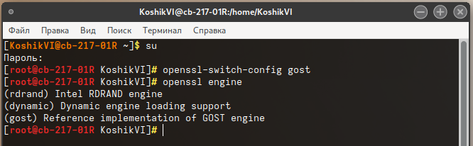
2. Установка клиентской части¶
- Удалите все файлы из директории
stimate(в домашней папке пользователя).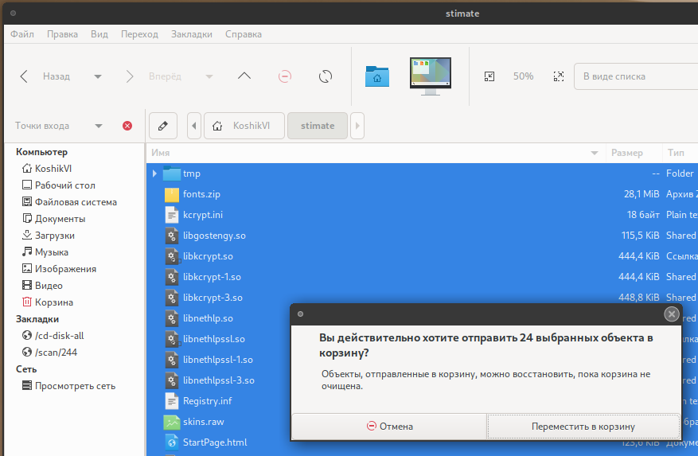
- Скачайте файлы
stimrunиstimrun.ini: Скачать для РЕД ОС (TLS) - Переместите файлы в директорию
stimate. - Выставьте права на файл
stimrun: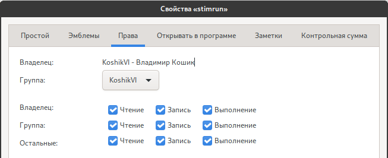
- Запустите
stimrunи дождитесь установки. - Адрес сервера:
https://smeta-app.yanao.ru:443 - После первого входа в меню <Настройки> → <Программа>:
- Введите адрес сервера обновлений:
win-stim.krista.ru:8080 - Установите галочку: <Регистрация для запуска приложения из браузера>
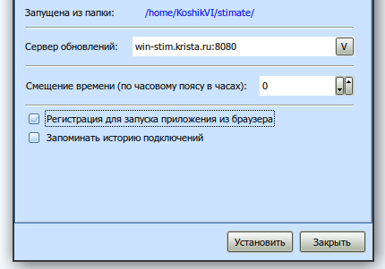
- Введите адрес сервера обновлений:
- Удалите все файлы из директории
stimate(папкаC:\Windows). - Скачайте файлы
stimrunиstimrun.ini: Скачать для Windows (TLS) - Переместите файлы в директорию
stimate. - Запустите
stimrunи дождитесь установки. - Введите адрес сервера:
https://smeta-app.yanao.ru:443 - После первого входа в меню <Настройки> → <Программа>:
- Введите сервер обновлений:
win-stim.krista.ru:8080 - Установите галочку: <Регистрация для запуска приложения из браузера>

- Введите сервер обновлений:
Тестовая апробация функционала¶
Для проверки функционала создана специальная тестовая база данных.
Данные для входа
- Конфигурация:
Департамент по общим вопросам ЯНАО_hidden.drx - Пользователь:
student - Пароль:
1
К сведению: Суффикс
_hiddenозначает скрытый контекст. Чтобы подключиться, скопируйте полное имя базы и вставьте его в поле «Конфигурация» вручную.
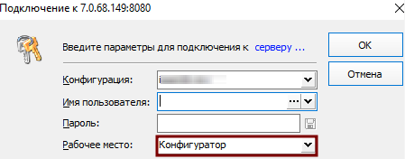
Результат успешной авторизации:
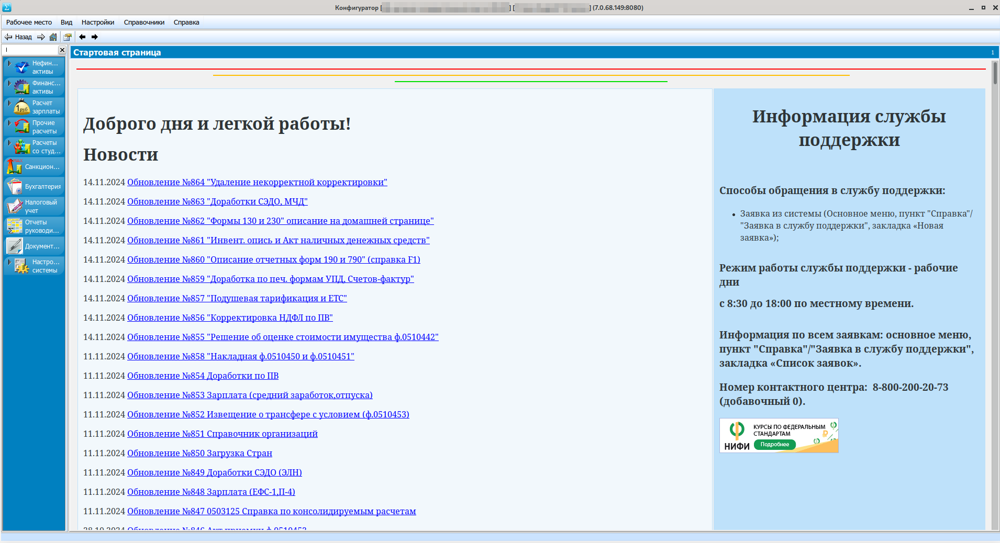